{kind=link}
Pratiquer
Installer un rythme et expérimenter sur un besoin réel.
Deuxième relance — Automne 2026
Faites avancer un projet concret et développez votre autonomie numérique. Vous apprenez à cadrer un besoin, produire avec l’IA, vérifier vos réalisations et expliquer votre méthode.
Démarrage vendredi
نحو الاستقلالية الرقمية
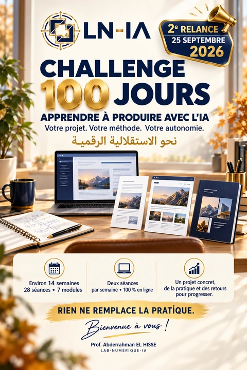
01 / L’esprit du Challenge
Cent jours pour comprendre, produire, corriger et présenter. Chaque version aide à construire une autonomie numérique progressive.
Installer un rythme et expérimenter sur un besoin réel.
Donner une forme concrète à ce que vous apprenez.
Vérifier les résultats et documenter les décisions.
Présenter la méthode et les preuves de progression.
02 / Votre point de départ
Des exemples possibles, à adapter à votre activité et à votre niveau de pratique.
Structurer un support d’atelier et une présentation pédagogique.
Formaliser une procédure et construire un tableau de suivi.
Préparer une page de présentation et les contenus de votre activité.
Organiser un dossier documentaire et des supports de reporting à vérifier.
Étudiants motivés et membres de la communauté : vous pouvez également partir d’un projet concret. Chaque production reste à vérifier dans son contexte métier.
03 / Le cadre de travail
Environ 14 semaines, 28 séances, entièrement en ligne. Les explications, les exercices et les retours sur vos productions donnent un cadre à votre progression.
Le parcours se conclut par un portfolio et une soutenance. Les jours, horaires et conditions sont précisés lors de l’échange préalable.
04 / Le parcours
Une progression du cadrage du besoin à la présentation des preuves.
Définir son objectif, son besoin et son point de départ.
Transformer une intention en consigne contrôlable.
Produire des contenus structurés, vérifiés et utiles.
Adapter un message à son canal et à son public.
Organiser une idée en page publiable après contrôle.
Classer, versionner et rendre le projet compréhensible.
Présenter ses réalisations, sa méthode et ses preuves.
05 / La méthode LN-IA
من الحاجة إلى الإنجاز
Définir le résultat utile et ses critères de réussite.
Formuler la demande et préparer une première version.
Relire, tester et corriger les écarts.
Conserver les versions et expliquer le résultat.
Ce cycle se répète pendant le parcours. Toute publication éventuelle intervient après validation humaine.
Rien ne remplace la pratique.
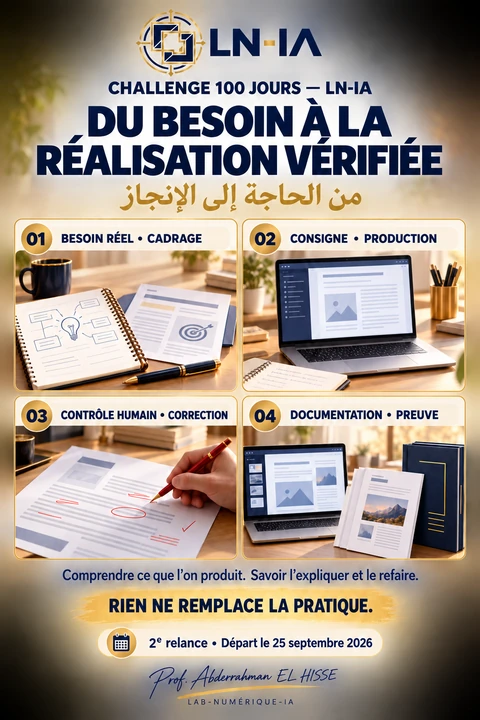
06 / L’accompagnement
الذكاء الاصطناعي يساعد والإنسان يقرر
L’IA assiste. L’humain pilote, contrôle et décide.
Il explique, propose des exercices et apporte des retours pour corriger progressivement les productions.
Vous définissez votre besoin, faites des choix, testez vos versions et présentez votre progression.
Assistance documentaire, contrôle qualité et préparation web interviennent selon le projet et le niveau de pratique. Ce sont des fonctions logicielles, pas des enseignants ni des services autonomes.
Retours, corrections, portfolio et soutenance : la validation reste humaine.
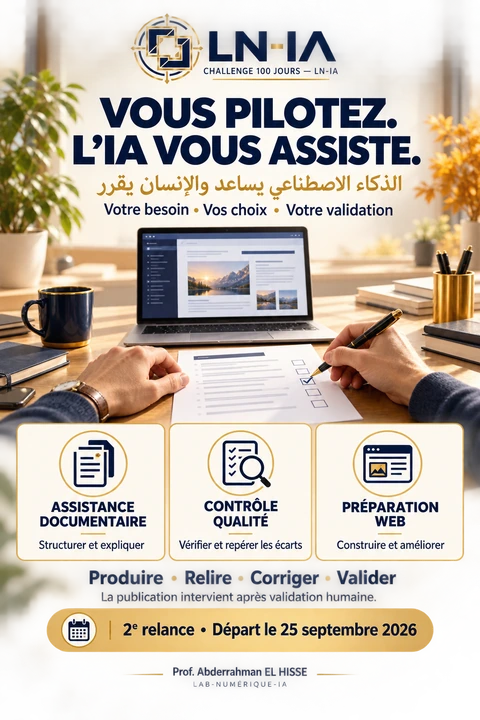
07 / Les productions
إنتاجات تخدم نشاطك المهني
Exemples de productions selon votre projet.
Structurer une information et clarifier une façon de travailler.
Expliquer une idée et transmettre une méthode à votre public.
Présenter une activité avec une page et des messages cohérents.
Organiser les actions et rendre leur avancement lisible.
Des outils selon le besoin
ChatGPT · Codex · VS Code · Git · GitHub
Les prompts, la communication et l’organisation accompagnent ces productions. Les quatre catégories ne sont pas des résultats promis à chaque participant.
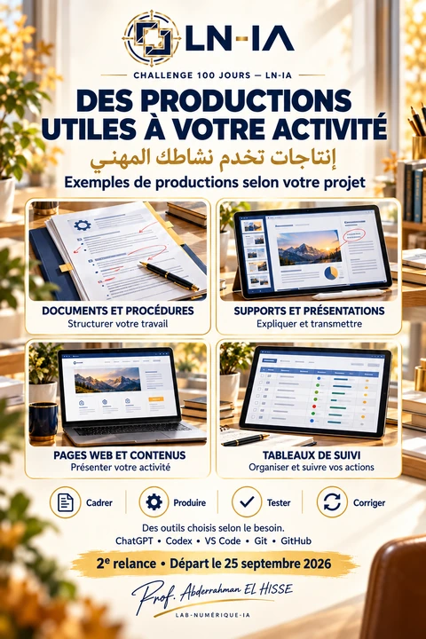
08 / Le portfolio de preuves
ملف الإنجاز — أدلة التقدم
Une preuve comprend le besoin initial, les versions, les corrections, le résultat et une explication.
Le portfolio LN-IA illustre une démarche et des réalisations disponibles. Il ne représente pas le résultat automatique de chaque participant. Les objets dessinés dans les affiches restent des illustrations.
Consulter le portfolio LN-IA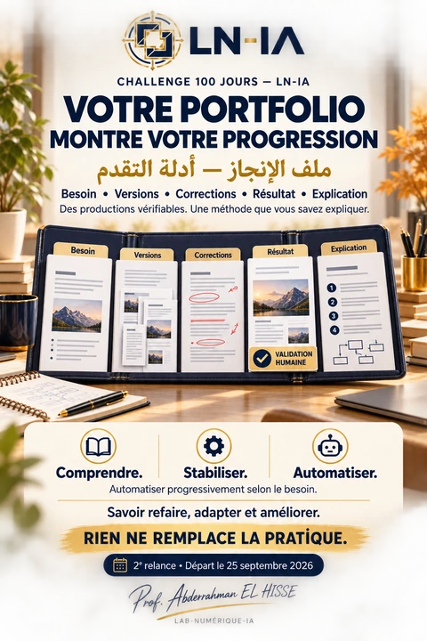
Ces liens ouvrent les sections documentées du portfolio, avec leurs explications et leurs ressources.
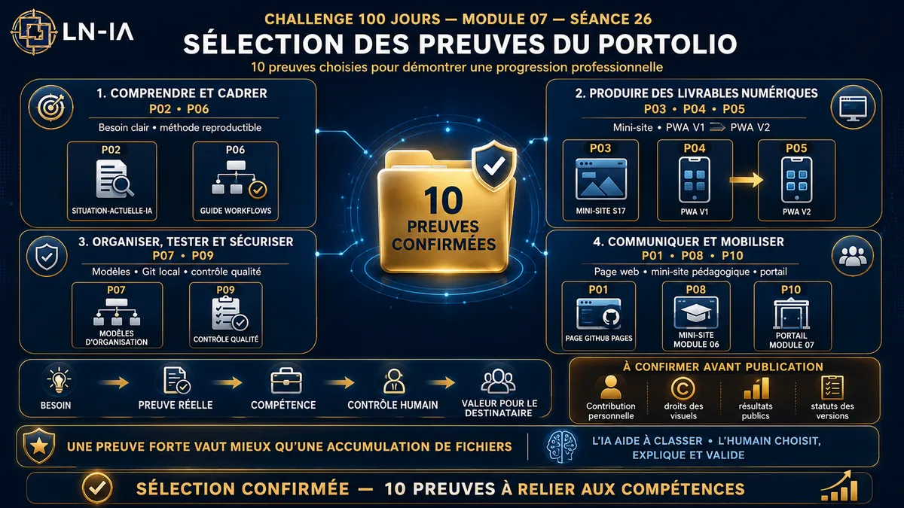
Analyser et prioriser
Passer d’un inventaire de fichiers à une sélection courte, explicable et contrôlée.
Voir la section du portfolio : Sélectionner des preuves fortes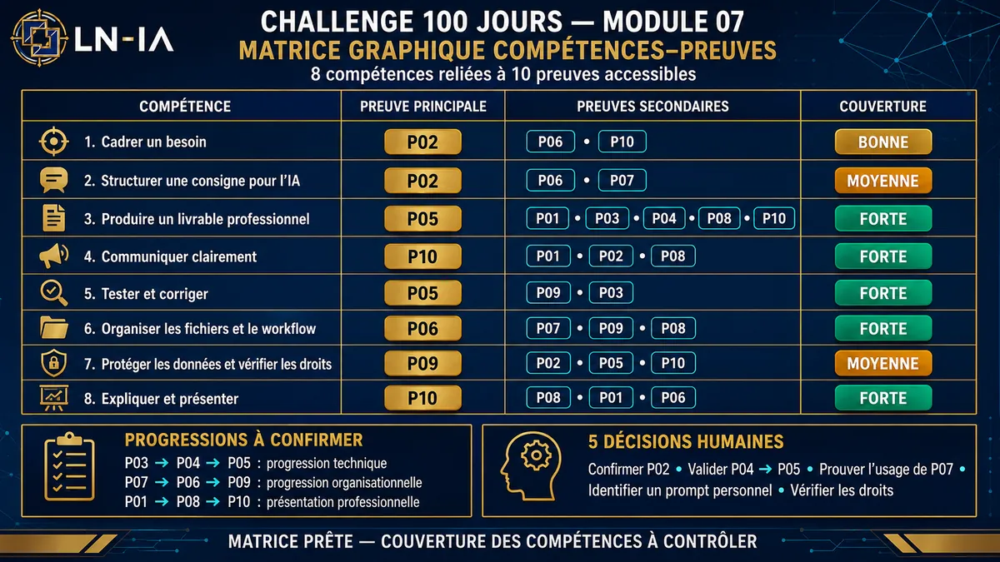
Documenter la progression
Associer chaque compétence annoncée à une production accessible et vérifiable.
Voir la section du portfolio : Relier compétences et productions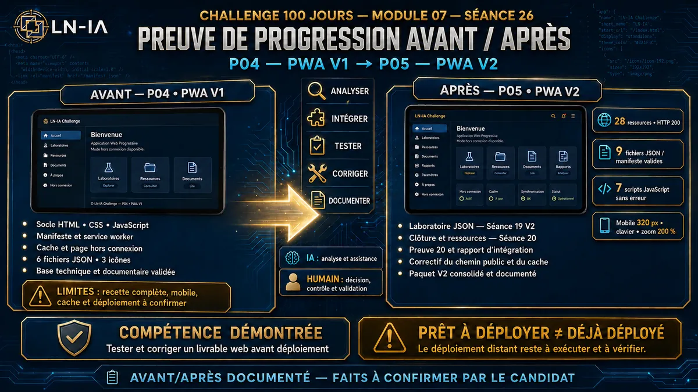
Tester et améliorer
Rendre visibles les corrections qui transforment une première version en livrable documenté.
Voir la section du portfolio : Montrer un avant et un après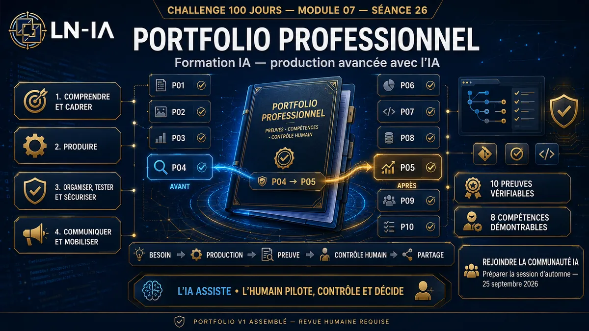
Présenter avec méthode
Organiser les productions en un récit professionnel clair, utile et démonstratif.
Voir la section du portfolio : Construire un portfolio professionnel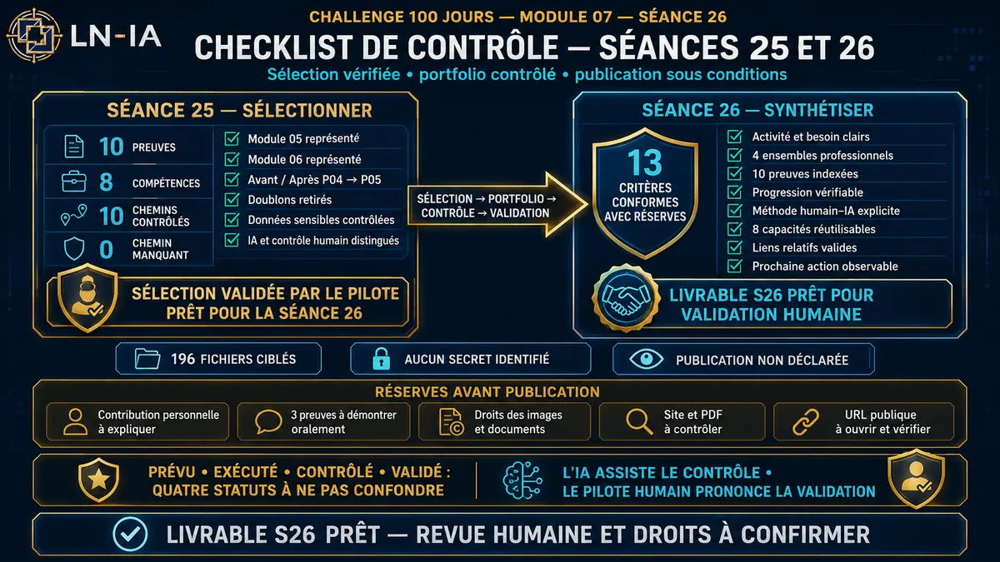
Assurer la qualité
Distinguer ce qui est prévu, exécuté, contrôlé et réellement validé.
Voir la section du portfolio : Contrôler avant de valider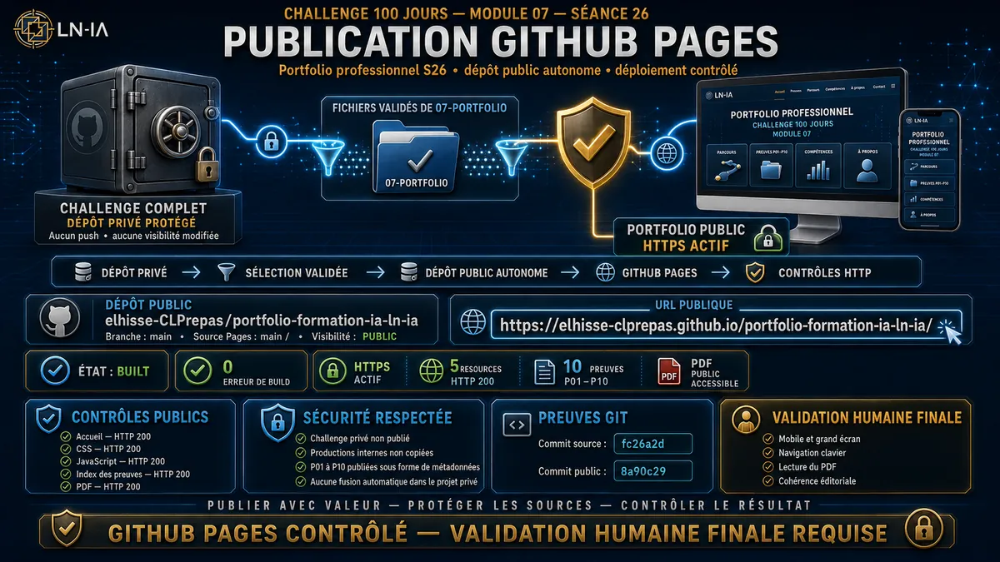
Versionner et partager
Préparer Git, protéger les sources et vérifier le résultat réellement publié.
Voir la section du portfolio : Publier de façon contrôlée09 / La progression visée
Comprendre ce que vous produisez, puis gagner progressivement en autonomie par la pratique.
10 / Questions pratiques
Un cadre clair pour préparer votre participation.
Aux enseignants, formateurs, coachs, managers, chefs de projets, entrepreneurs et professionnels administratifs, fiduciaires ou comptables. Les étudiants motivés et les membres de la communauté peuvent aussi y trouver un cadre de pratique.
Un ordinateur, une connexion Internet, un besoin ou projet concret et du temps pour pratiquer entre les séances. Le parcours commence par le cadrage et les prompts ; il ne demande pas de savoir coder au départ.
Deux séances par semaine, entièrement en ligne : 28 séances sur environ 14 semaines, dans un parcours de 100 jours. Les jours et horaires sont précisés lors de l’échange préalable.
Selon votre projet : documents, présentations, contenus, pages web ou tableaux de suivi. Vous conservez aussi vos prompts, vos corrections et la documentation de votre méthode. Les exemples ne constituent pas une liste de résultats garantis.
Vous relisez et testez vos productions avec des retours et des corrections progressives. Le portfolio et la soutenance rendent la progression explicable. L’IA assiste ; la validation reste humaine.
Les outils et leurs conditions d’accès sont précisés selon le projet lors de l’échange préalable. Aucun abonnement payant inclus n’est annoncé ici.
Le bouton WhatsApp ouvre la communauté publique My-Community-IA. Les modalités, les conditions et les tarifs sont précisés lors de l’échange préalable ; ce lien n’est pas un formulaire d’inscription ni un contact individuel.
11 / La prochaine étape
Un projet concret, une pratique régulière et des retours pour progresser. Bienvenue à vous !
Le parcours relie productions, documentation et preuves. GitHub Pages peut servir à publier une réalisation validée ; GitHub Projects peut aider à organiser et suivre le travail, selon le projet.
Ce lien ouvre la communauté publique My-Community-IA. Les modalités de participation sont précisées lors de l’échange préalable.
Prof. Abderrahman EL HISSELAB-NUMÉRIQUE-IA
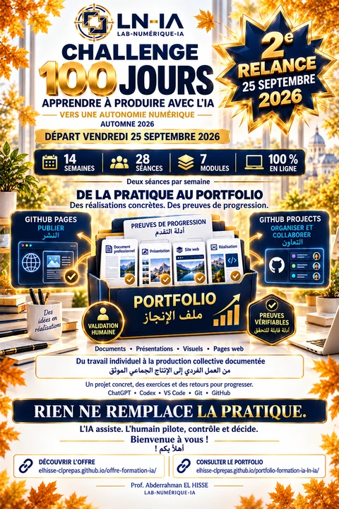
{kind=link}
{kind=link}
{kind=link}
{kind=link}
{kind=link}